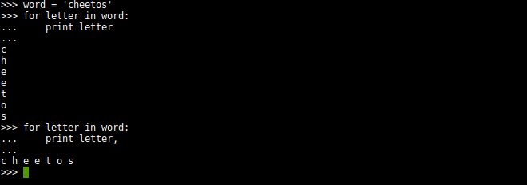
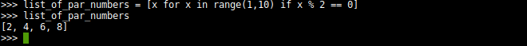
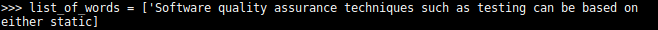
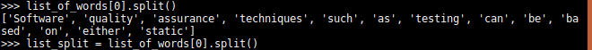
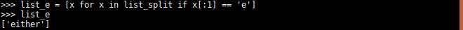
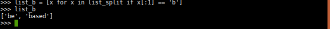

Python cool things
Flat printing

Generating lists
A quick way of generating lists. Here we create a list of all the pair numbers from one to ten.

Let's try something else.


Make two lists of all the words starting with e and another starting with b


Split
In this example, I start with a simple string, and what split can do to that string is, as the name says, split it. And you can do so simply but using .split() as I did in the beginning. But we can take this one step further. So let's say we want to grab whatever is in front of 'example'. We can do so buy spliting 'example' of the string and picking whats in front of it, hence the [1]. And that would be it. Now let's pick just the word phrase 'phrase'. Like previously, we get whats in front of 'example' but now we split twice. The last split is to remove the '.'

BeautifulSoup
This gets very useful when parsing specific text in a html page as we will see soon. So let's talk about BeautifulSoup. To use this you need to install the bs4 module. For this example i used the main page of Hack Forums and grabed the names of online users.
This code uses bs4 to grab specific tags like tbody and td. Also find_all() allows us to grab tags with a certain class. Bs4 does much, much more. In the end we use text=True to grab our names. We could have used split.
Bs4 docs


Running our code we can see the span tags and the final result the names. All of this output is done by our get_names() function.